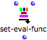
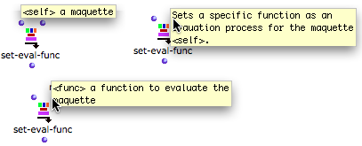
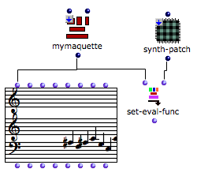

OpenMusic DocumentationHiérarchie de section : OM 6.6 User Manual > Maquettes > Maquette Programming > The Synthesis Patch > Set-Eval Function
OpenMusic DocumentationHiérarchie de section : OM 6.6 User Manual > Maquettes > Maquette Programming > The Synthesis Patch > Set-Eval Function
Navigation : page précédente | page suivante
Attention, votre navigateur ne supporte pas le javascript ou celui-ci à été désactivé. Certaines fonctionnalités de ce guide sont restreintes.
Assigning a Synthesis Patch to a Maquette with the Set-Eval Function
Features
Function
|  | The set- eval-func function can assign a synthesis patch to an internal maquette from the patch where it is located. The maquette must be on "reference" mode. |
To access the set-eval-function :
- select
OM Kernel / Control / Set-Eval-Func, - press
Cmdand type "set-eval-func".
To set a box on "reference" mode in a patch, select it, press b and click twice on the  label to display the
label to display the  reference label.
reference label.
Maquettes on "Reference" Mode
Inputs and Outpus

Set-eval-func has two inputs and one output :
- " self" : a maquette on "reference" mode.
- "func" : a patch or function on "reference" mode.
- Its output returns a reference.
Connection

The resulting chord-seq is obtained when evaluating the factory box, with the maquette on normal mode.
|
The calculation of the maquette's value takes place at the evaluation of set-eval-func. Note that the maquette's output can also be connected to an object that will possibly materialize its new value. Nevertheless, the maquette must be reset on normal mode so that the object can be evaluated. |
Références :
Plan :
Navigation : page précédente | page suivante
A propos...(c) Ircam - Centre Pompidou